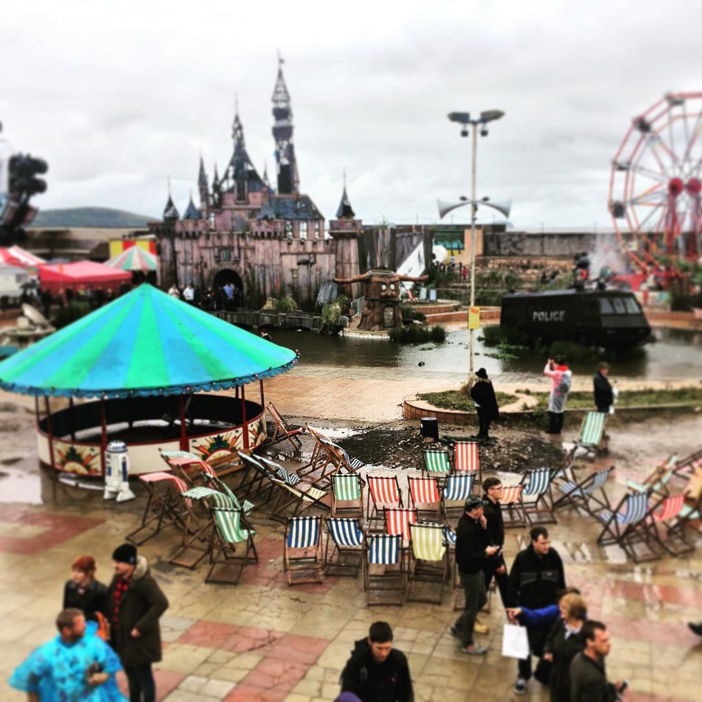
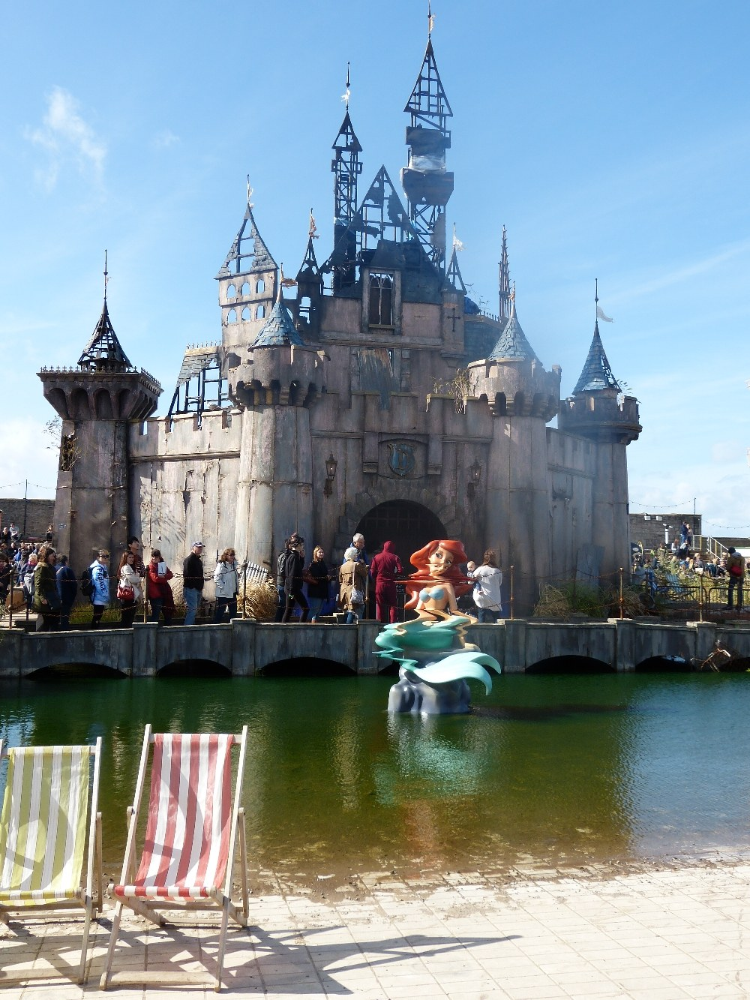
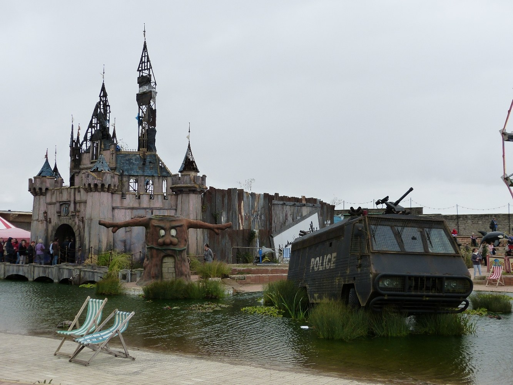
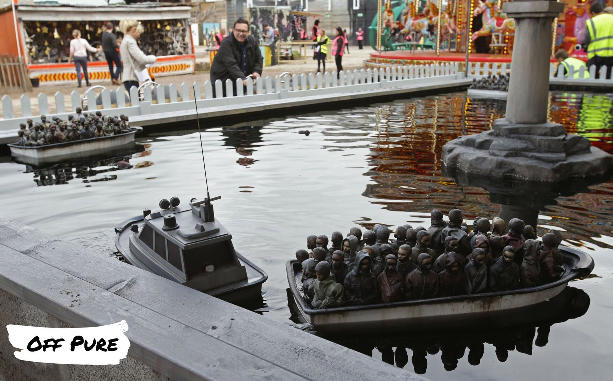
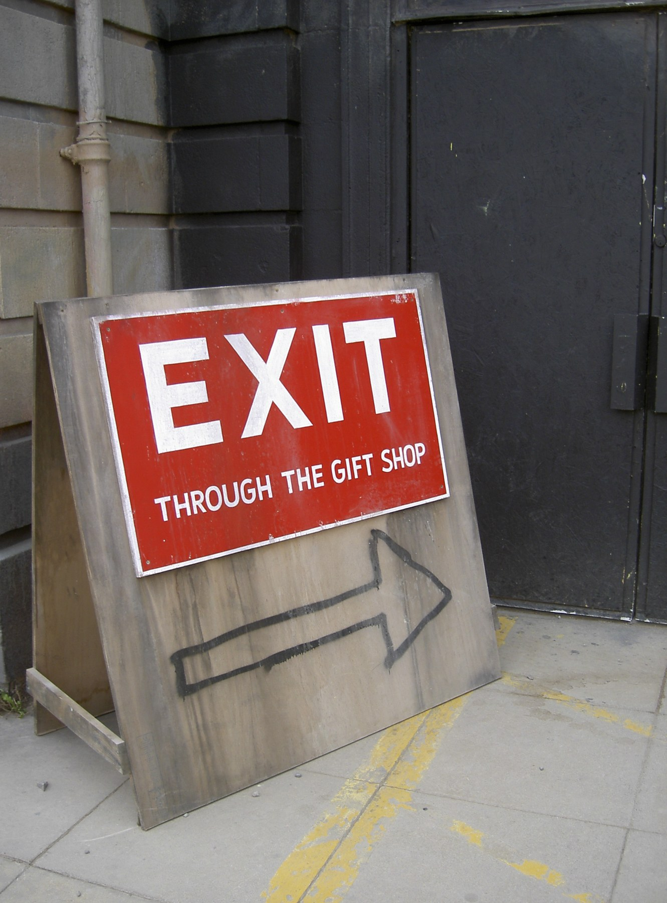
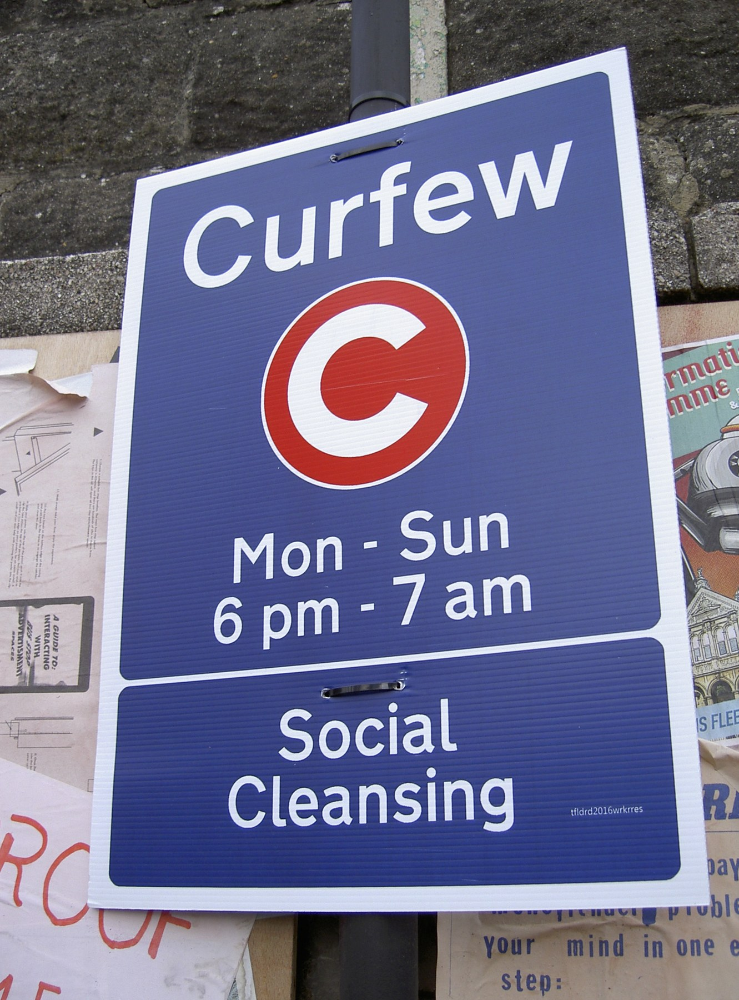
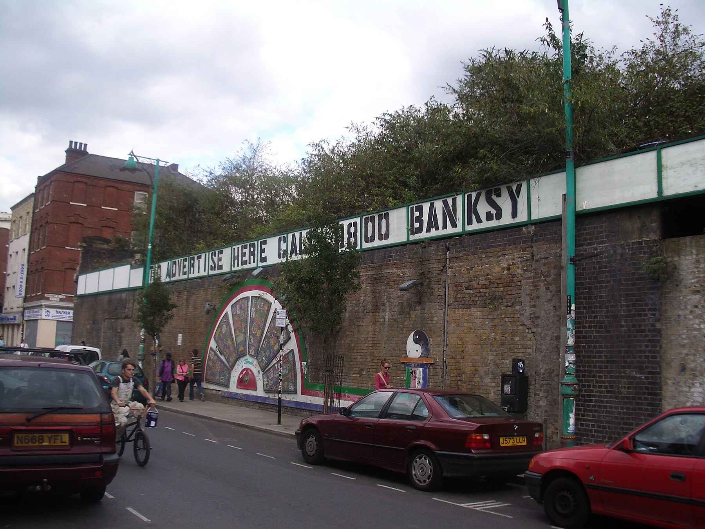
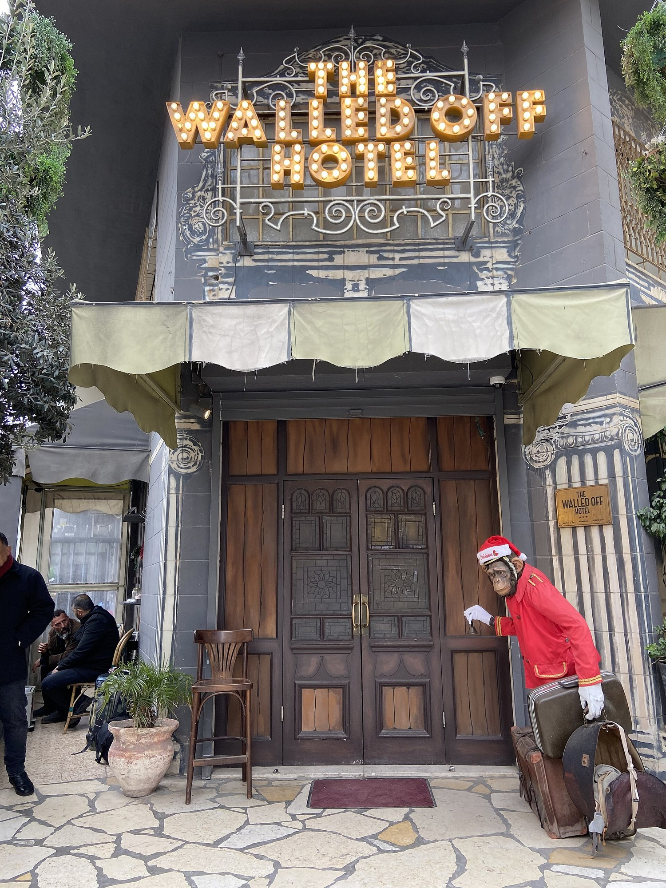
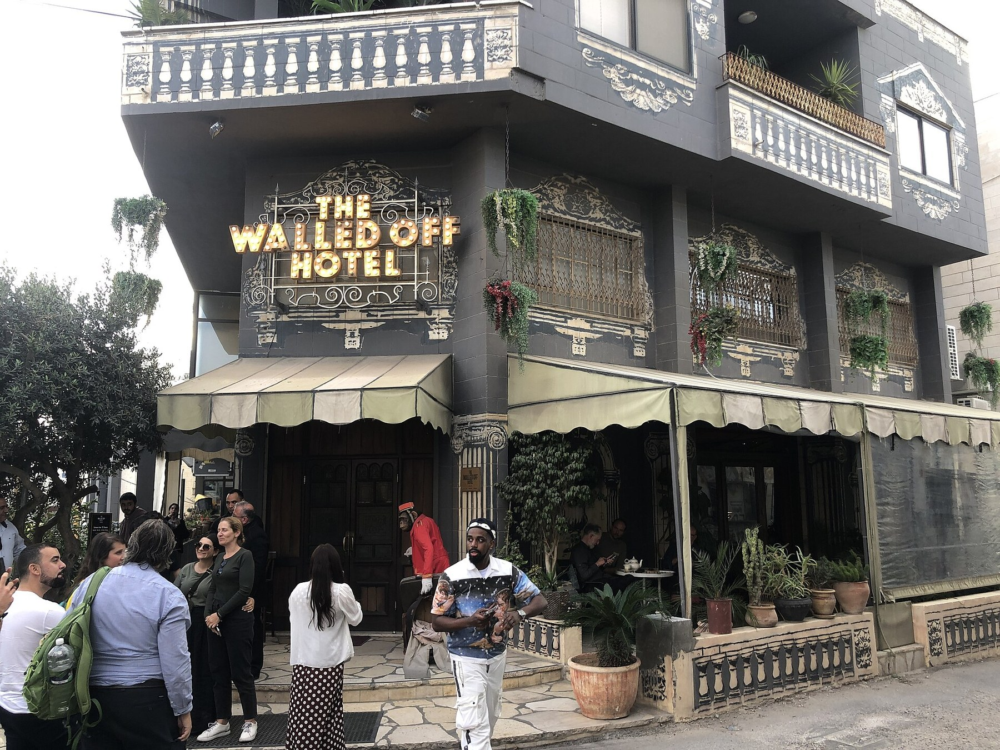
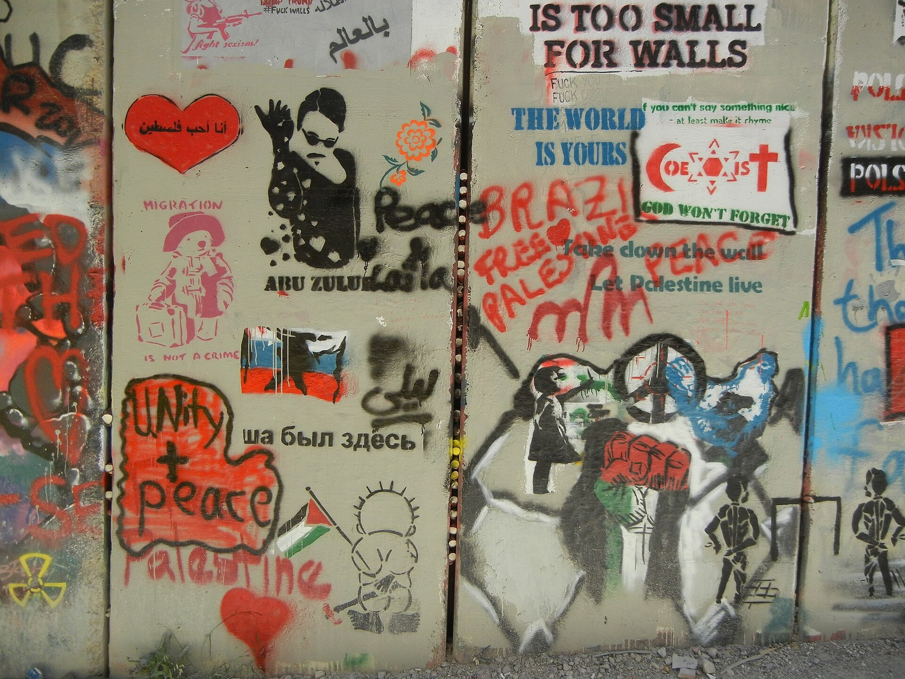

Anglais · Seconde bac pro · A2 and B1 · Lesson 4 of 6
Lesson 4. Can anti-commercial art escape the market?
Question of the day: When a slogan criticises money and then meets a shop or an auction, what happens to its voice?
For the teacher: timing (52 minutes)
| Time | Activity |
|---|---|
| 00 to 05 | Retrieval: ownership and reproduction |
| 05 to 12 | Shredding video, two viewings, brief notes |
| 12 to 20 | Dismaland trailer, two viewings, brief notes |
| 20 to 27 | Vocabulary and comparison exercises |
| 27 to 34 | The Walled Off Hotel: image study |
| 34 to 41 | Paired mini-debate |
| 41 to 44 | Flashcards |
| 44 to 49 | Written record |
| 49 to 52 | Oral exit and homework |
Checkpoint at minute 44. Students can name an observed event and an interpretation separately, and can describe a contrast between a promise and what is shown.
Eight-minute essential closing route (replaces the last eight minutes if the class needs more time; it does not add time): 44 to 46: complete one comparison with more... than or whereas. 46 to 49: each student explains a contradiction in 20 seconds. 49 to 51: write the two-sentence record. 51 to 52: set homework.
Video exposure stays below ten minutes: the shredding extract is shown twice (about four minutes in total); the Dismaland extract is shown twice (about four minutes and fourteen seconds in total).
A2 outcome
Describe contrasts and compare two ways of encountering a work.
B1 outcome
Explain a contradiction without reducing it to a simple accusation of hypocrisy.
Step 1 and 2. The shredding, from the artist's film
In October 2018, a framed version of Girl with Balloon was sold at Sotheby's in London. As the sale ended, the work passed through a mechanism in the frame and part of it was shredded. The transformed work was later given the title Love is in the Bin. It was sold again in 2021, for a reported price of about 18.6 million pounds. The price is a documented market event. It does not, by itself, prove the artist's exact intention.
We do not have an open-licence photograph of the shredded work. We watch a short extract from the film published by the artist, on the channel banksyfilm. The film is the artist's presentation of the event, not an independent investigation. The teacher previews it before class and checks that it can be shown.
Exact link: youtube.com/watch?v=vxkwRNIZgdY. Extract: 00:00 to 02:00. Source: banksyfilm, Shredding the Girl and Balloon: The Director's Half Cut.
First viewing. Number these elements in the order you see them: preparation, the auction, the audience reaction. Do not explain them yet.
Second viewing. Note one visible event, and one question the footage cannot answer.
Corrigé
Order: students should follow what the extract actually shows. Typically: preparation around the frame and the room; the auction itself; then the audience reaction as the paper moves through the frame. Visible event (examples): the lower part of the work passes through the frame and hangs in strips; people in the room react. Questions the footage cannot answer (examples): whether every bidder knew; what the artist exactly intended; whether the gesture criticises the market or becomes part of it. The film is the artist's own presentation, so it cannot be treated as a neutral enquiry.
Exercise 1. Visible or unproven? Write V or U.
- The work passes partly through a mechanism in the frame.
- Every person in the room knew what would happen.
- The event takes place in an auction room.
- The artist wanted to destroy the market for the work.
- The transformed work later sold for a very high price. (This is not in the two-minute extract: it comes from later reporting.)
Corrigé
1 V (in the film). 2 U (we cannot see what people knew). 3 V. 4 U (intention is not proven by the film). 5 This is a reported market fact from 2021, not something the two-minute extract shows. In the exercise, it is unproven from the footage. It can be used later as a documented report, with attribution.
Step 3. Dismaland, a temporary park
In 2015, Banksy created Dismaland, a temporary "bemusement park" in Weston-super-Mare. Many other artists took part. Do not attribute every object in a photograph to Banksy. The trailer is again from the channel banksyfilm, published on 25 August 2015.
Exact link: youtube.com/watch?v=V2NG-MgHqEk. Extract: 00:00 to 02:07. Source: banksyfilm, published 25 August 2015.
First viewing. Record three things you can see. Do not explain them yet.
Second viewing. Identify two contrasts between the promise of a theme park and what the trailer actually shows.




Now read three more visual slogans. The first two were photographed at Dismaland (a multi-artist project: do not attribute every object to Banksy). The third is a large painted sign on Brick Lane, London.



Exercise 3b. Official language, used as a slogan. For Exit through the gift shop, for Social Cleansing, and for To advertise here call 0800 Banksy, write the slogan sentence, the audience, the tone, and the visual device (official look, arrow, advertising board, a phone number made from the artist's public name).
A2 pathway
Complete, for each sign: The words say... They look like... The tone is... The image mocks / denounces...
B1 pathway
Write a short paragraph for each. How does the official look help the sentence? What happens if a critique of the market ends with a gift shop, or if a critique of advertising uses the form of an advertisement?
Corrigé
Example answers. Exit through the gift shop looks like a safety or wayfinding sign; it may say that the way out of a critique is a shop. The tone is ironic. Social Cleansing imitates a British restriction sign (a curfew, official hours) in order to denounce a social policy; the official look is the device. To advertise here call 0800 Banksy uses the form of a billboard and the public name as a phone number: it may mock advertising, or mock the idea that a wall is for sale. Other justified readings are possible. None of them is a proof of a private intention.
Corrigé
Visible elements (examples): a crooked castle; a distorted mermaid; a police vehicle in the water; deckchairs; queues; a boat crowded with figurines. Contrasts (examples): a theme park promises fun, brightness and safety, whereas Dismaland shows decay, awkward humour and political images; a castle should look magical, whereas this one looks damaged; boats in a park are usually a pleasant ride, whereas these boats carry figurines of migrants. Accept other contrasts that are grounded in what is shown.
Step 4. Expanding your vocabulary and grammar
| Word or phrase | Meaning | Example |
|---|---|---|
| auction | a public sale in which the highest bidder wins | The work was sold at an auction in London. |
| to shred | to cut into strips | Part of the work was shredded in the frame. |
| commodity | something treated as an object of trade | A critical artwork can become a valuable commodity. |
| contrast | a clear difference between two things | There is a contrast between the park's promise and its appearance. |
| whereas | used to set two facts against each other | A theme park promises delight, whereas Dismaland looks disappointing on purpose. |
| although | used to admit one fact and then add a contrasting one | Although the gesture seemed to attack the sale, the work later sold for more. |
| to criticise | to point out what is wrong, in your view | The park seems to criticise entertainment and consumer culture. |
| hypocrisy | pretending to have principles that your actions contradict | A simple accusation of hypocrisy may be too thin for this case. |
Grammar: comparatives (more disappointing than, less magical than, far more expensive than), whereas and although.
Exercise 4. Combine the two facts, using the word in brackets.
- A theme park is supposed to be cheerful. Dismaland looks grim. (whereas)
- The shredding looked like an attack on the auction. The work became even more valuable. (although)
- The original mural was in the street. The auctioned work was in a framed sale. (more... than / whereas)
- The castle should look fairytale-like. This castle looks crooked. (less... than)
Corrigé
Example answers. 1. A theme park is supposed to be cheerful, whereas Dismaland looks grim. 2. Although the shredding looked like an attack on the auction, the work became even more valuable. 3. The original mural was in the street, whereas the auctioned work was in a framed sale. / The auctioned work was treated as a more saleable object than the mural on the wall. 4. This castle looks less fairytale-like than a traditional park castle. / This castle is less magical than visitors might expect.
Step 5. The Walled Off Hotel, a place that is already a slogan
In 2017, a hotel associated with Banksy opened in Bethlehem, beside the West Bank barrier. The name plays on the Waldorf hotels. The place is at once a hotel, a viewpoint, and a political statement. Guests pay to stay next to a wall that limits movement. That is already a contradiction worth describing carefully, without rushing to a single moral verdict.



The barrier photograph shows many paintings and messages by different people. Do not attribute every image on that wall to Banksy.
A2 pathway
Write four sentences: where the hotel is; what you can see on the entrance photograph; one contrast with an ordinary luxury hotel; one question you would ask a visitor.
B1 pathway
Write a short comparison (eight to ten lines) of three encounters with Banksy's world: a street mural, an auction room, and this hotel. Use whereas and although. End with a qualified judgement, not a one-word verdict.
Step 6. Mini-debate
Motion: "When critical art sells for millions, the criticism dies."
A2 pathway
A2: 30 seconds for, 30 seconds against, then a 20-second personal decision. Frames: I agree / I do not agree, because... Although..., the work still...
B1 pathway
B1: one minute for, one minute against, then a 30-second qualified conclusion. You must refuse a simple accusation of hypocrisy, and explain at least two possible effects of the sale: it may weaken the critique, spread the image, or change its meaning.
Step 7. Written record and homework
A2 pathway
Complete: At the auction, I can see... Dismaland looks... than a usual park, because... I think selling the work may... because...
B1 pathway
Write a 100-word commentary on the question of the day, using although, whereas and one attributed fact (the 2021 sale, or the opening of the hotel in 2017).
Homework. A2: make flashcards for whereas, auction and contrast. B1: prepare a 45-second oral presentation of one photograph from today's lesson, for a visitor who has never heard of Dismaland or of the hotel. Both: do not treat the artist's intention as something the price can prove.